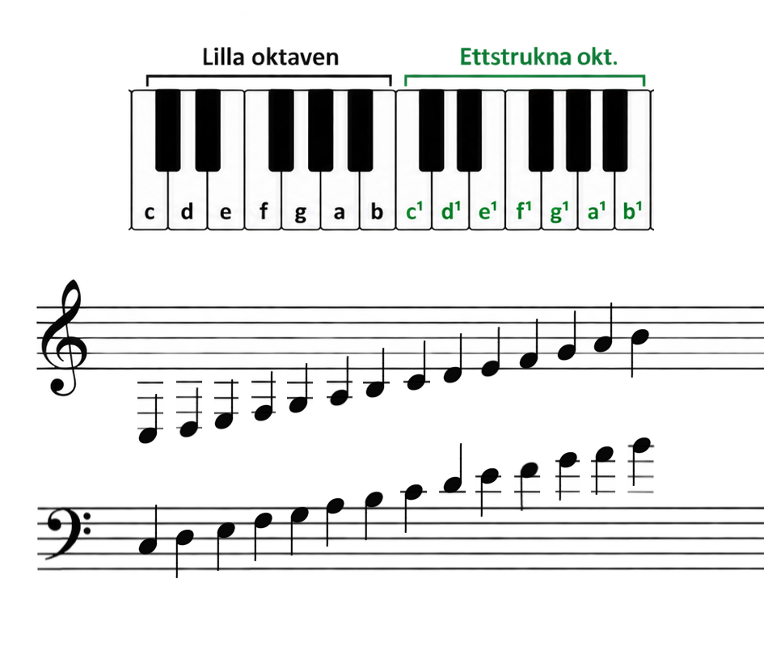

I förra delen lärde vi oss notsystemet och använde G-klaven för att hitta tonernas platser.
Nu ska vi titta närmare på vad en klav faktiskt gör och lära oss en till klav: F-klaven.
Vad är en klav?
Titta på det här notsystemet. Det finns en not - men vilken ton är det?
Det går faktiskt inte att veta - vi behöver en klav!
En klav är ett tecken i början av notsystemet som talar om vilken ton som ligger var. Utan klav är det bara fem linjer - vi har ingen aning om vad noten heter.
G-klaven
I förra delen använde vi G-klaven för att hitta tonernas platser i notsystemet. Låt oss repetera!

G-klaven ringlar sig runt den andra linjen nerifrån. Det visar att en not på den linjen är G.
Utifrån det kan vi räkna ut var alla andra toner ligger, precis som vi gjorde i Del 2.
F-klaven
Den näst vanligaste klaven heter F-klav och kallas ibland för basklav.
F-klavens två prickar ligger på varsin sida om den fjärde linjen nerifrån (näst översta linjen). Det visar att en not på den linjen är F.
Det är samma princip som G-klaven. Klaven ger oss en referenspunkt och utifrån den kan vi räkna ut var alla andra toner ligger.
Fråga: F ligger på den fjärde linjen i F-klav. Vilken ton ligger ett steg ner, i mellanrummet under F?
Visa svar
Svar: E. E kommer precis före F i tonernas ordning (C D E F G A B).
Klaven bestämmer
Titta vad som händer om vi lägger en not på samma plats, fast med olika klaver:

Med G-klav: B
Med F-klav: D
Noten ligger kvar på exakt samma plats, men beroende på vilken klav vi använder får platsen olika tonnamn.
Med G-klav heter noten B. Med F-klav heter den D.
Det är därför klaven är så viktig. Den hjälper oss att veta vilka toner som hör till linjerna och mellanrummen.
G-klav och F-klav tillsammans
Ibland ser man G-klav och F-klav samtidigt. Det är vanligt i pianonoter, där musiken skrivs på två notsystem.
Höger hand spelar vanligtvis det som står i G-klav och vänster hand det som står i F-klav.
Här ser du hur noterna i de två klaverna hänger ihop med tangenterna på pianot:

Titta på de lägsta tonerna i bilden. I F-klav ligger de bekvämt på linjerna, men i G-klav behövs väldigt många extra linjer under notsystemet. De där extra linjerna kallas hjälplinjer. Hjälplinjer är korta extra linjer som man lägger till när en ton inte får plats på de fem vanliga linjerna. Det fungerar, men blir svårläst om det blir för många. Därför är det praktiskt att ha olika klaver - så att tonerna oftast hamnar på de vanliga linjerna.
Bra jobbat!
Nu kan du två klaver! Du vet hur både G-klaven och F-klaven fungerar, och du har sett att klaven bestämmer vilka toner som hör till linjerna och mellanrummen i notsystemet.
Nu finns det massor med passande övningar att göra!